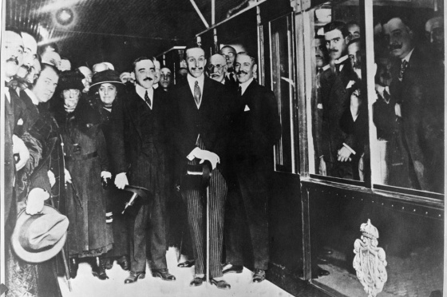
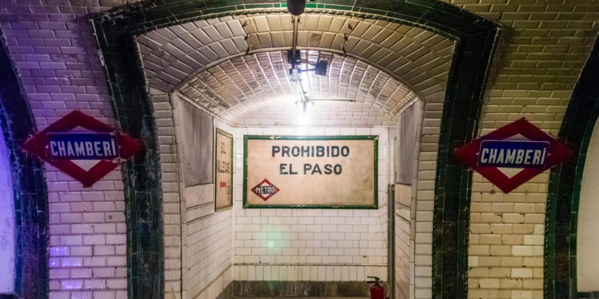
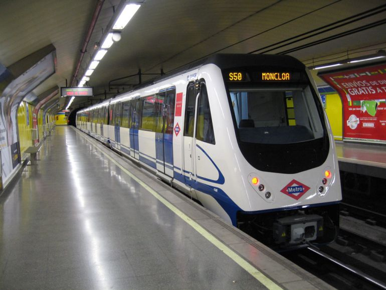

Un poco de historia sobre el Metro de Madrid
Los inicios (1919)

El Metro de Madrid fue inaugurado el 17 de octubre de 1919. Su primera línea conectaba Cuatro Caminos con Sol y tenía apenas 3,5 kilómetros. En aquel momento, los madrileños no estaban acostumbrados a viajar bajo tierra y la idea generó asombro, curiosidad e incluso desconfianza. Sin embargo, pronto se convirtió en una solución rápida y práctica para moverse por la ciudad, facilitando la vida en una capital que comenzaba a crecer.
Crecimiento y expansión

Durante las décadas de 1920 y 1930, el metro amplió sus líneas para conectar nuevos barrios y facilitar los desplazamientos diarios. A lo largo del siglo XX, la red creció siguiendo el ritmo de la ciudad. Cada ampliación implicaba desafíos técnicos y sociales, pero poco a poco el metro se consolidó como el medio de transporte principal para trabajadores, estudiantes y familias.
Modernización y nuevas líneas

A finales del siglo XX y comienzos del XXI, el Metro de Madrid experimentó un proceso de modernización. Se renovaron estaciones, se incorporaron trenes más rápidos y se construyeron líneas nuevas que llegaron incluso a municipios del área metropolitana. Esto permitió que más personas pudieran usar el metro como parte de sus rutinas diarias, reduciendo el tráfico y mejorando la movilidad urbana.
El metro hoy en día

Hoy, el Metro de Madrid es una de las redes de metro más extensas del mundo. Conecta diferentes zonas de la ciudad y municipios cercanos, enlazando con autobuses y trenes de cercanías. El metro se ha convertido en una parte esencial de la identidad madrileña y continúa adaptándose a nuevas tecnologías y necesidades de movilidad sostenible.